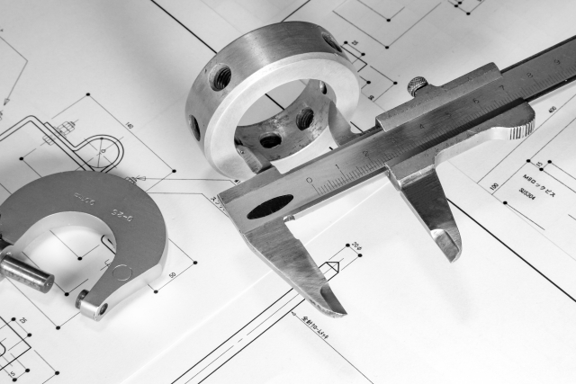

自己紹介
鹿児島県出身の26歳です。
エンジニアとして高みを目指して日々努力しています。
- 大久保 駿
- Okubo Shun
- 1994.05.20
| 年 | 月 | 学歴 |
|---|---|---|
| 2010年 | 4月 | 鹿児島中央高等学校 入学 |
| 2013年 | 3月 | 鹿児島中央高等学校 卒業 | 2013年 | 4月 | 北九州予備校 入学 |
| 2014年 | 3月 | 北九州予備校 卒業 |
| 2014年 | 4月 | 大阪工業大学情報科学部 コンピュータ科学部 入学 |
| 2018年 | 3月 | 大阪工業大学情報科学部 コンピュータ科学部 卒業 |
| 2018年 | 4月 | 株式会社 メイテック 入社 |
| 2019年 | 6月 | 株式会社 メイテック 退社 |
| 2019年 | 9月 | 株式会社 MAISON MARC 入社 |
職務経歴
大学では幅広く機械・電気・ソフト（ソフトが中心）の分野を学び、
新卒で入社した会社は機械系のエンジニアとして就業しました。
その後、転職を経てソフト系のエンジニアとして働いています。
-

-
機器のキッティング業務
設計図を見ながら機器を接続する。 例)WLC→catalyst3650→POE→AP
この作業により、全体的なネットワークの構造の理解、 IPv4やサブネットマスクなどIPアドレスの理解をすることができた。 -
AccessのVBA改修
営業の方が使用するAccessツールが既存しており、そのツールの改修。
主な担当は、メールの自動作成。処理の高速化。
メールの自動作成は、必要なデータをデータベースから引用し、Outlookで出力をする。 処理の高速化はSQL文の見直し。 取り込み元のデータはTableauからcsvファイルをローカルに用意して始める。 よって、Tableu操作は理解している。
詳細設計書の作成も行った。(フローチャート、コードの説明) -
ExcelのVBA開発
保険会社で使用する帳票を出力するExcelツールを開発。
Excelで入力画面を作り、そこにお客様情報を入力してもらう。
そのデータをクラスモジュールで取得し、条件にあった保険プランを判定する。 保険プランに基づいて帳票を出力する。
VBAによるコーディングの他に、概要設計書（画面レイアウト、帳票レイアウト）、 基本設計書、詳細設計書（シート、ロジック）、テスト仕様書の作成も担当。
趣味
趣味は筋トレです。毎日ジムに通っています。
食事にも気を使い、かっこいい身体づくりを目指しています。
色々な観光地に行くことが好きで、
今はありませんがバイクで行くことが多かったです。